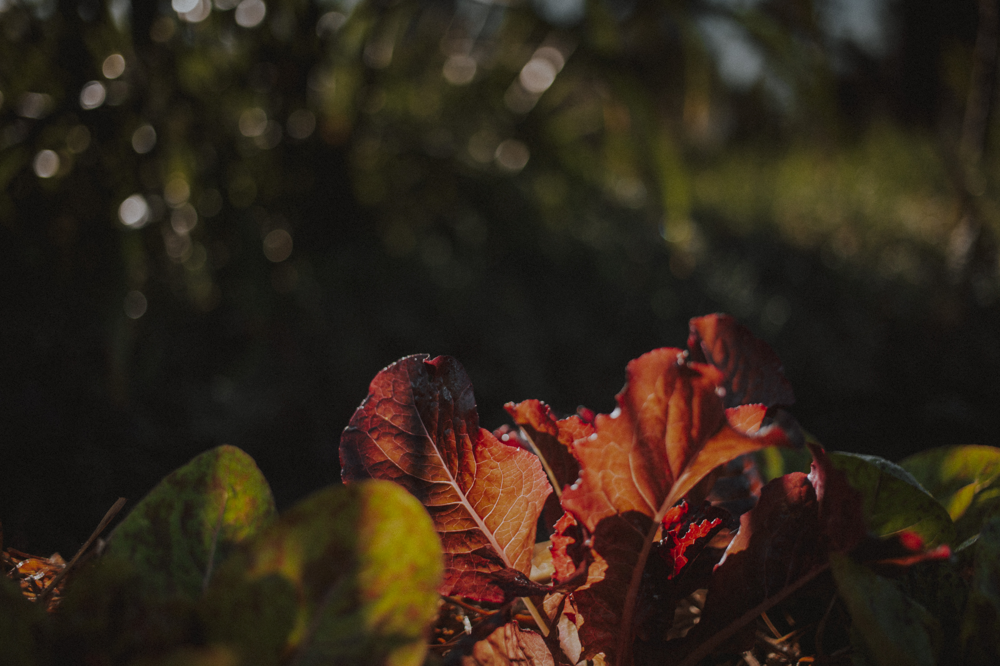
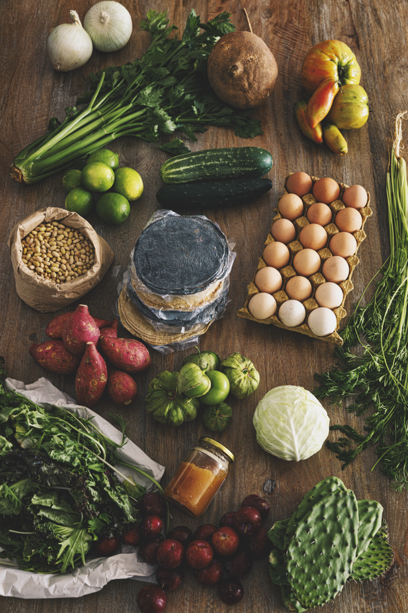

Vendemos alimentos artesanales y canastas con la cosecha de la semana ya sea a través de suscripciones o con compra directa. Elige la que más te convenga y lleva a tu hogar frescura y salud.

Cuidamos la trazabilidad y la relación comercial que tenemos con personas agricultoras, artesanas, productoras y cocineras está basada en el comercio justo, así que toda la red es remunerada por su trabajo.
Ayúdanos a saber si podemos llegar hasta ti: ingresa tu código postal.
¿Por qué comprar en nuestra tienda?
Alimentos agroecológicos, frescos y 100% mexicanos, directo a tu casa.
Tenemos alimentos de temporada que provienen de los huertos trabajados por 50 familias campesinas que integran la red campesina de arca tierra y los de origen animal son resultado de prácticas regenerativas con cuidado hacia los animales.
Frutas, verduras y cada alimento y producto que ofrecemos son resultado de prácticas y principios de cuidado al medio ambiente.

Te invitamos a sumarte a un movimiento en el cual una alimentación saludable va de la mano del cuidado del planeta y de la revalorización de quienes se dedican a la agricultura campesina.
Canastas de alimentos de temporada: agroecológicas y variadas
Nuestras canastas de alimentos temporada ofrecen un balance entre verduras de hoja, frutas y raíces y cada semana son diferentes.
Procuramos incluir productos de consumo básico en la cocina como jitomate, cebolla, mezcla de lechugas, aguacate y hierbas de olor.
Compra hoy y empieza a disfrutar alimentos frescos, sanos y con historia.